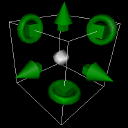

Object Module Matrices
Every object module owns a matrix
that defines it's object's position, size and orientation in space.
You define the matrix of an object module either by entering
position, size and rotation values in the inspector ...

.... or by moving the object's handles in object mode.

Once defined, the matrix of an object module stays constant.
If you want to animate the position, size or rotation of an object,
you have to use matrix modules:
Matrix Modules
Matrix modules enable you to interactively change the values
of a matrix in play mode by connecting their value in connectors
to modulators.
There exists a matrix module for each of the operations translate,
rotate and scale:


For convenience, there exists the transform
module, which performs the operations of the above modules in
the same order:

Matrix Hierarchy
A set of modules that are connected with matrix connections
define a hierarchy:
|
The image to the left depicts a simple hierarchy of the
four matrix modules and an object module.
If the matrix of a parent module is changed, the
transformation of all it's ancestors (the parent's
children, their children, and so on) will change
accordingly. The mini tutorial 'matrices'
explains this behavior more detailed.
Let's call a module which has an empty matrix in connector
the root module of an hierarchy (the gray transform
module in this case).
|
Identity Matrix

You can interrupt the inheritance of matrices in a matrix hierarchy
by inserting an identity
matrix module. The identity matrix module 'ignores' the matrix
of it's parent module so that it's children behave like
root modules but are still part of the bigger hierarchy.
This is sometimes necessary because the camera
module and the attribute
hub module depend on the hierarchy information as well.
Matrix Hub
Each object module has at least one matrix out connector.
If you want to add more children than there are connectors, you
have to use the matrix hub module, which simply forwards
the matrix of it's parent to it's 5 possible children.
Goto & Label

You may insert label
modules in your matrix hierarchy.
It can be used in conjunction with goto modules (see below) or
act as a switch: If you deactivate a label, the modules in the
subhierarchy at the label's matrix out connector will be
ignored when rendering the scene.
The label module behaves like the matrix hub module: it forwards
the matrix at it's matrix in connector to the module at
the matrix out connector.

The goto modules enables
you to 'link' subhierarchies and therefore provide a powerful
way to reuse complete module structures in your projects.
If kodisein encounters a goto module while traversing the matrix
hierarchy for rendering, it continues the traversal at the label,
which is linked to the goto module via it's name.
>>> inspector

|